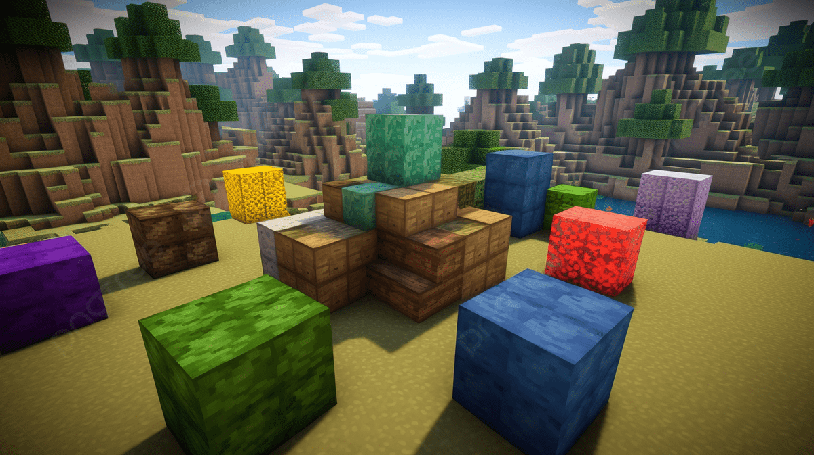

Tipos de Bloques en Minecraft
Bloques de construcción
Estos son los bloques más usados para construir casas, castillos y cualquier estructura. Algunos ejemplos:
- Madera (roble, abeto, jungla, acacia, roble oscuro)
- Piedra y sus variantes (ladrillo, piedra pulida, adoquín)
- Ladrillos de Nether y piedra del End
Bloques de recursos
Los bloques de recursos son vitales para progresar en el juego, ya que permiten fabricar herramientas, armaduras y más:
- Hierro
- Oro
- Diamante
- Esmeralda
- Redstone (para mecanismos y circuitos)
Bloques especiales
Algunos bloques tienen propiedades únicas y pueden afectar la jugabilidad:
- Lava y agua: afectan la movilidad y pueden usarse como defensa o transporte.
- Hielo y nieve: bloques deslizantes y decorativos.
- Bloques mágicos: encantados con efectos especiales o parte de pociones y rituales.